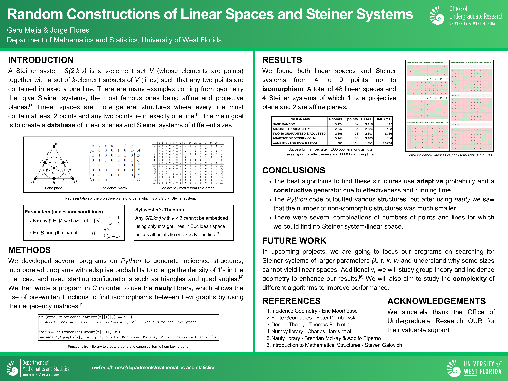

Research
Below is a summary of our current and past research projects. Click on a project to expand its details.
SURP 2025: Random Construction of Steiner Systems
We wrote programs to randomly generate incidence structures using algorithms in Python, then used nauty and traces in C to find structures up to isomorphism. We also studied concepts and proved theorems related to Design Theory, Algebra and Geometry.
Read paper and poster here: Documents and Code

SURP 2026: On the Tychonoff Theorem and its Equivalences
Point set topology starts with a set theoretical framework and develops concepts such as topological spaces, coverings and compactness. The project focuses on product topology, compact spaces and equivalent forms such as the Well Ordering Theorem.
Read paper and poster here: Documents

Proseminar 2027: On Van Kampen's Theorem and its Generalization
Read paper and poster here: Documents and Code